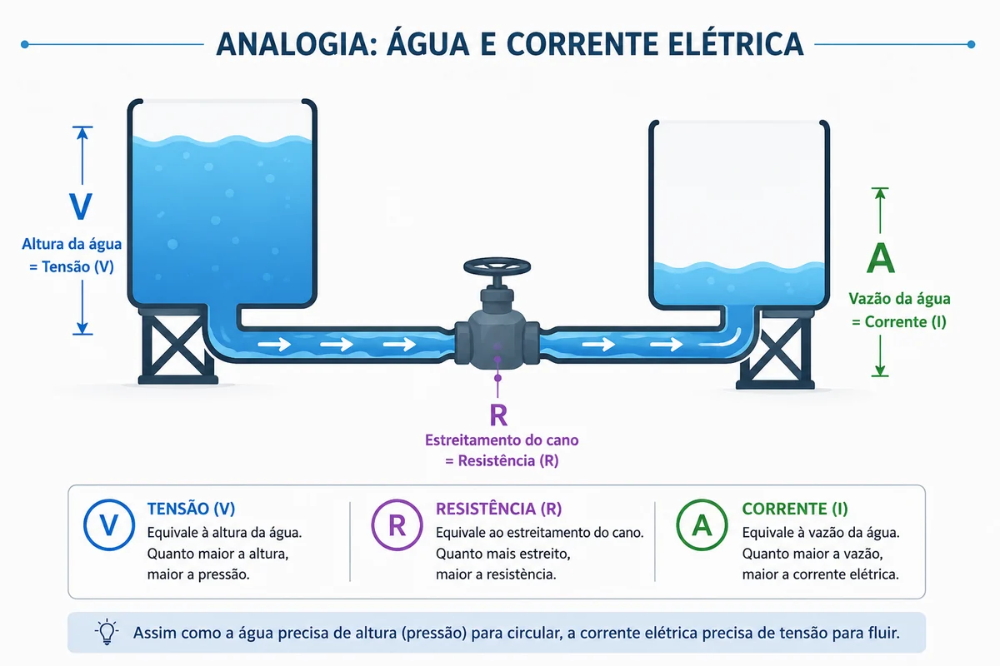
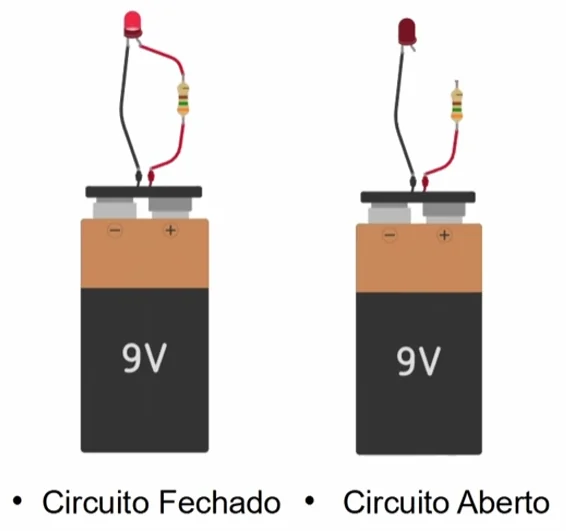
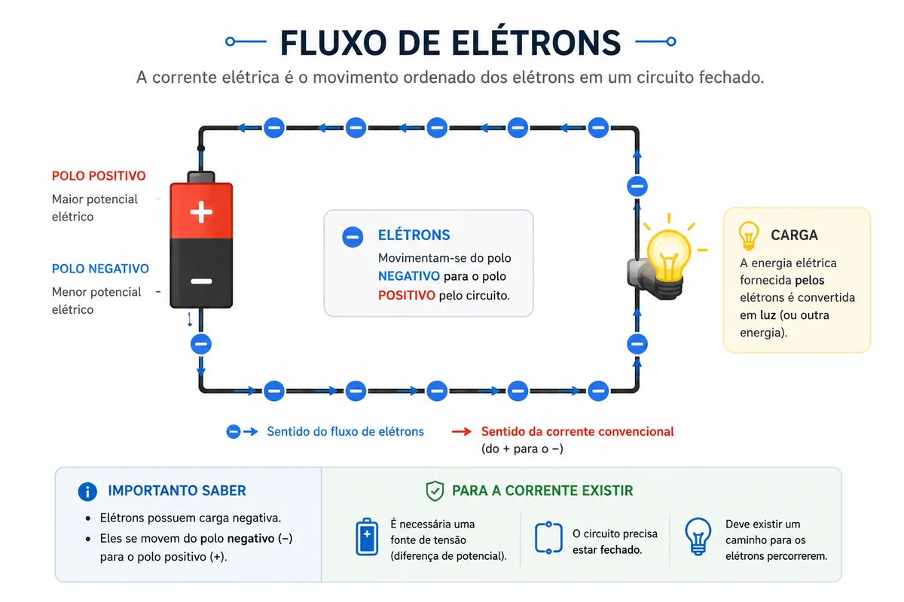
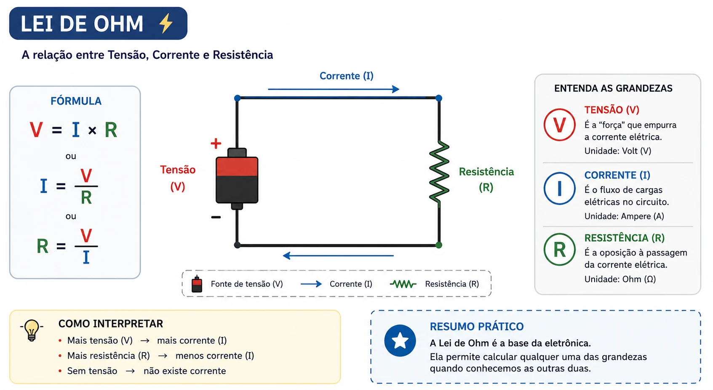
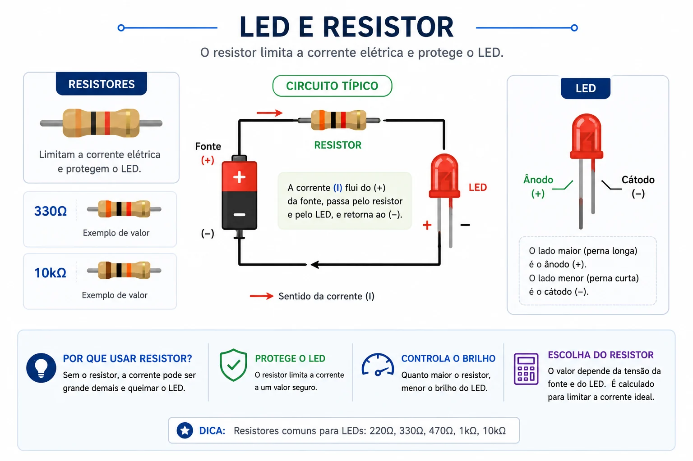
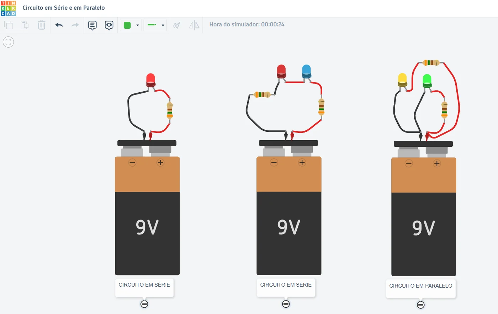
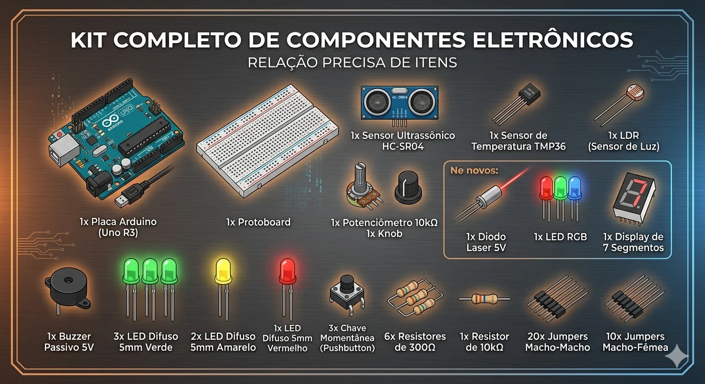
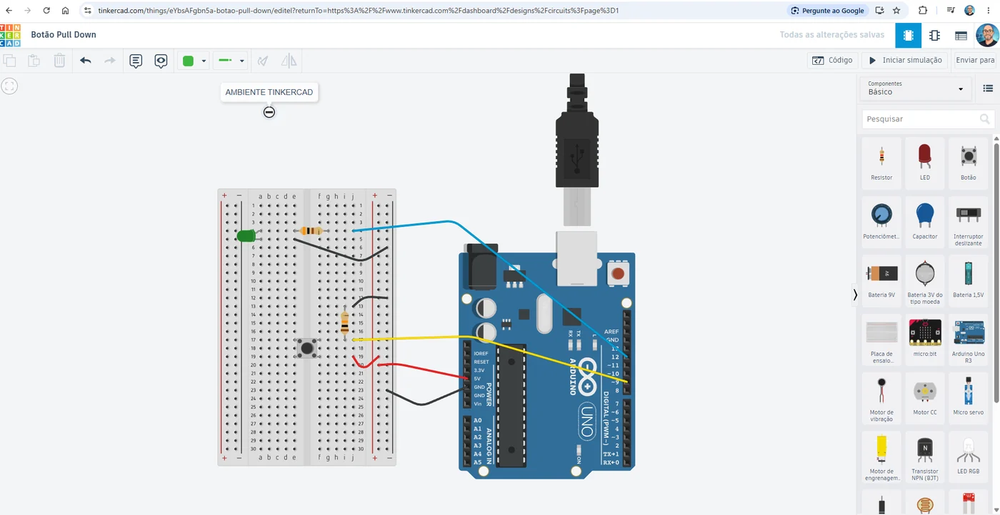
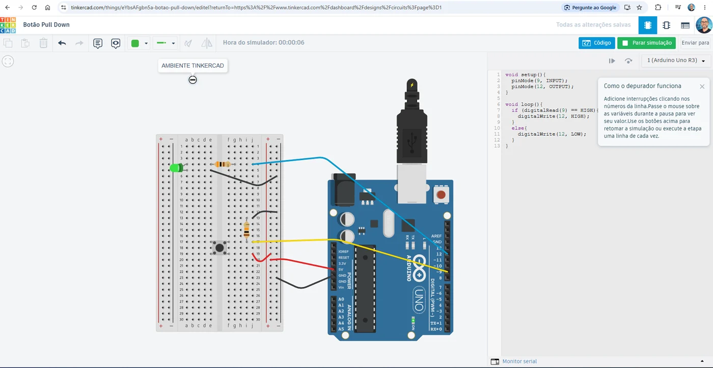

1. O que é o Arduino?
O Arduino é uma plataforma de prototipagem eletrônica. Na prática, ele funciona como um pequeno computador
programável especializado em interagir com o mundo físico.
Em vez de trabalhar apenas com teclado, mouse e monitor, ele pode ler sinais de sensores e controlar
componentes como LEDs, buzzers, motores e displays.
2. Sistema embarcado
Um sistema embarcado é um sistema eletrônico programado para executar uma tarefa específica.
SemáforoAlarmeCarroRobóticaAutomação
3. Software controlando hardware
O programa enviado ao Arduino define o que os pinos devem fazer: enviar sinal, ler sinal, ligar, desligar,
medir ou controlar algum componente.
5V
alimentação positiva usada em muitos circuitos simples.
GND
referência negativa e caminho de retorno da corrente.
Resistor
limita a corrente e protege componentes como LEDs.
Protoboard
permite montar circuitos sem solda, usando trilhas internas.
4. Como a eletricidade percorre o circuito
Para um componente funcionar, a corrente precisa percorrer um caminho fechado. Em muitos projetos iniciais,
esse caminho começa no 5V ou em um pino digital, passa pelo componente e retorna ao GND.
5V / Pino→Componente→GND
5. Entrada e saída
Entrada é aquilo que envia informação para o Arduino, como um botão ou potenciômetro.
Saída é aquilo que o Arduino controla, como LED ou buzzer.
Entradasbotão, potenciômetro, sensores
SaídasLED, buzzer, motor, display
6. Digital e analógico
Um sinal digital trabalha com dois estados: HIGH ou LOW, ligado ou desligado.
Um sinal analógico pode variar gradualmente dentro de uma faixa de valores.
7. PWM
PWM é uma técnica que liga e desliga um sinal muito rapidamente para simular níveis intermediários.
É assim que o Arduino consegue controlar o brilho de um LED em pinos PWM.
Pulsos rápidos→brilho variável
Preparação para a prática
A partir do primeiro projeto, cada montagem irá unir eletricidade, eletrônica e programação.
O LED protegido será o ponto de partida: simples, visual e essencial para entender circuito fechado,
polaridade e proteção por resistor.
Eletricidade + Eletrônica + Programação = Automação
Fundamentos elétricos e primeiros circuitos
Antes de começar a programar o Arduino, é importante entender como a eletricidade percorre um circuito e como os componentes eletrônicos trabalham juntos.
Analogia da água
Uma forma simples de entender tensão, corrente e resistência é imaginar a eletricidade como água passando por um cano.

A tensão elétrica funciona como a força que empurra a água. A corrente elétrica representa o fluxo em movimento. Já a resistência elétrica dificulta a passagem da corrente.
Tensão, corrente e resistência

A tensão elétrica é medida em volts. A corrente elétrica é medida em ampere. A resistência elétrica é medida em ohms.

Para que a corrente elétrica passe pelo circuito, ele precisa estar fechado.
Lei de Ohm

A Lei de Ohm relaciona tensão, corrente e resistência elétrica. Ela será utilizada frequentemente nos projetos com Arduino.
LED e resistor

O resistor limita a corrente elétrica e protege o LED.
Quando o LED é ligado diretamente em uma bateria sem resistor, ele pode ser danificado devido ao excesso de corrente elétrica.
Polaridade do LED
O LED possui polaridade. O terminal maior normalmente representa o positivo. O menor representa o negativo.
Circuitos em série e paralelo

No circuito em série, os componentes ficam no mesmo caminho da corrente elétrica. Se um componente falhar, o circuito para de funcionar.
No circuito em paralelo, existem ramificações diferentes. Assim, uma parte do circuito pode continuar funcionando mesmo que outra apresente problema.
Componentes que serão utilizados nos projetos

Ao longo dos projetos, serão utilizados LEDs, resistores, botões, sensores, buzzer, potenciômetro, display e diversos outros componentes eletrônicos.
Primeiros passos no Tinkercad
O Tinkercad será utilizado para montar, testar e simular os circuitos eletrônicos.
- Acesse o site tinkercad.com
- Clique em inscrever-se
- Crie uma conta pessoal
- Entre com sua conta Google
- Clique em criar
- Escolha a opção circuitos
- Arraste os componentes para a área de trabalho
- Utilize fios para interligar os componentes
- Clique em iniciar simulação

No ambiente Tinkercad é possível movimentar componentes, criar circuitos, alterar fios e testar montagens eletrônicas.

Além da montagem dos circuitos, o Tinkercad também permite programar placas Arduino e executar simulações em tempo real.